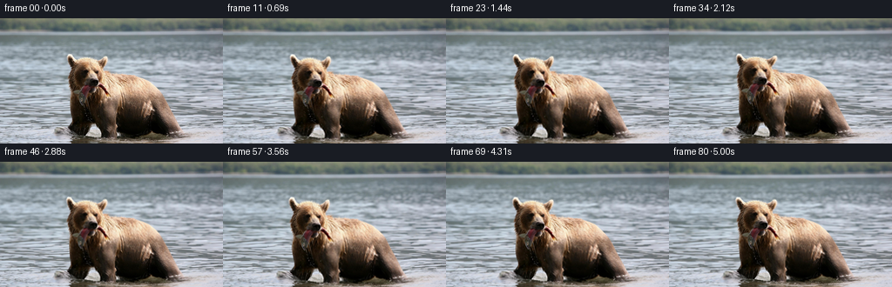
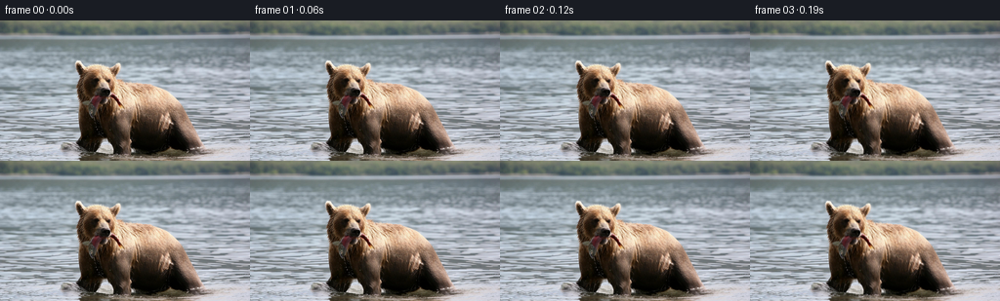

CODING AGENTS AS PIXEL WORLD MODELS
traex/GPT-5.6-Sol · 0872_s2
点击播放 · 原生 RGB 像素
逐轮保存的候选
回放视频、检查图与代码变化。
每份候选均可单独播放。实际图片检查记录在下方工具轨迹中。
候选 01播放与检查图
点击播放 · 原生 RGB 像素


展开代码变化
--- 上一保存版本
+++ 本次保存版本
@@ -0,0 +1,107 @@
+from pathlib import Path
+import numpy as np
+import cv2
+from PIL import Image
+import artifact_io
+
+# A deliberately restrained image-to-video treatment: the photographed subject bobs
+# in the current while several differently-sized ripples travel through the water.
+# All texture and detail comes from the supplied RGB photograph.
+ROOT = Path(__file__).resolve().parent
+src_u8 = np.asarray(Image.open(ROOT / 'first_frame.png').convert('RGB'), dtype=np.uint8)
+src = src_u8.astype(np.float32)
+H, W = src.shape[:2]
+yy, xx = np.mgrid[0:H, 0:W].astype(np.float32)
+
+# Build soft, photograph-derived foreground mattes. The animal/fish are warmer and
+# considerably darker than the cool grey water. Closing joins fur highlights into
+# one coherent subject before the matte is feathered broadly.
+r, g, b = [src[..., k] for k in range(3)]
+roi = (xx > 70) & (xx < 229) & (yy > 35)
+warm = (r > g + 5) & (r > b + 10)
+dark = (np.maximum.reduce([r, g, b]) < 113)
+seed = ((warm & (r > 58)) | dark) & roi
+seed8 = (seed.astype(np.uint8) * 255)
+seed8 = cv2.morphologyEx(seed8, cv2.MORPH_CLOSE, np.ones((13,13), np.uint8), iterations=2)
+# Keep components connected to the center/lower foreground, then bound it naturally.
+n, labs, stats, _ = cv2.connectedComponentsWithStats(seed8)
+keep = np.zeros((H,W), np.uint8)
+for i in range(1,n):
+ x0,y0,w0,h0,area = stats[i]
+ if area > 300 and x0 < 175 and x0+w0 > 95 and y0+h0 > 78:
+ keep[labs == i] = 255
+# Include bright fur/fish surrounded by the detected silhouette without engulfing water.
+keep = cv2.morphologyEx(keep, cv2.MORPH_CLOSE, np.ones((17,17),np.uint8), iterations=1)
+subject = cv2.GaussianBlur(keep.astype(np.float32)/255.0, (0,0), 5.0)
+subject *= np.clip((yy-31)/15,0,1)
+subject = np.clip(subject,0,1)
+# A tighter upper-subject matte controls a small natural nod.
+head_gate = np.exp(-(((xx-128)/69)**4 + ((yy-77)/47)**4)).astype(np.float32)
+head = subject * head_gate
+# Possible projecting fish/tail area receives only subpixel flex -- conservative enough
+# to preserve the semantics whichever edge is fur or fish.
+fish_gate = subject * np.clip((xx-124)/75,0,1) * np.exp(-((yy-88)/43)**4)
+
+# Water matte and a foreground strip where waves lap in front of the immersed subject.
+water = np.clip(1.0 - cv2.GaussianBlur((keep>0).astype(np.float32),(0,0),7), 0, 1)
+water *= np.clip((yy-4)/34, .12, 1.0)
+lap = np.clip((yy-119)/21,0,1) * subject
+
+frames = []
+for k in range(81):
+ if k == 0:
+ frames.append(src_u8.copy())
+ continue
+ t = k / 16.0
+ # Slow current and buoyant motion. Envelopes start at exactly zero and finish calmly.
+ ease = 1.0 - np.exp(-k/8.0)
+ bob = ease * (1.05*np.sin(2*np.pi*t/2.85) + .32*np.sin(2*np.pi*t/1.18 + .4))
+ sway = ease * (.72*np.sin(2*np.pi*t/3.8 + .25) - .18)
+ nod = ease * .55*np.sin(2*np.pi*t/3.1 - .35)
+
+ # Tiny documentary-style camera drift and push, always sampled from the source.
+ zoom = 1.0 + ease*(0.0055*(1-np.cos(2*np.pi*t/8.5)))
+ cx, cy = 138.0, 86.0
+ camx = cx + (xx-cx)/zoom - .25*ease*np.sin(2*np.pi*t/4.7)
+ camy = cy + (yy-cy)/zoom - .18*ease*np.sin(2*np.pi*t/4.1+.5)
+
+ # Layered, low-amplitude wave refraction. Frequencies and speeds differ to avoid
+ # the appearance of one rigid sine warp.
+ phase1 = 2*np.pi*(yy/26.0 - t/2.35)
+ phase2 = 2*np.pi*(yy/47.0 + t/4.4) + .018*xx
+ phase3 = 2*np.pi*(xx/97.0 - t/5.2) + yy/29.0
+ wx = water * ease * (0.64*np.sin(phase1) + .31*np.sin(phase2))
+ wy = water * ease * (0.19*np.sin(phase3) + .11*np.sin(phase1*0.72))
+
+ # Inverse local deformation: coherent bob/sway plus a softer nod and fish flex.
+ # Horizontal flex increases gradually toward the projecting edge.
+ tail_flex = ease * .48*np.sin(2*np.pi*t/1.65 + (xx-120)/48.0) * fish_gate
+ dx = sway*subject + nod*head*((yy-82)/55.0) + tail_flex
+ dy = bob*subject + nod*head + .15*tail_flex*np.sin((yy-60)/13.0)
+
+ mapx = (camx - dx + wx).astype(np.float32)
+ mapy = (camy - dy + wy).astype(np.float32)
+ warped = cv2.remap(src, mapx, mapy, interpolation=cv2.INTER_CUBIC,
+ borderMode=cv2.BORDER_REFLECT_101)
+
+ # Moving reflected-light ribbons are broad and translucent, preserving photographic
+ # grain rather than drawing synthetic lines. Some water crosses the lower silhouette.
+ p = 2*np.pi*(yy/19.0 - t/2.05) + .22*np.sin(xx/24.0 + t)
+ ribbons = (np.maximum(0,np.sin(p))**7 - .22) * (water + .32*lap)
+ p2 = 2*np.pi*(yy/34.0 + t/3.4) + xx/61.0
+ ribbons += .35*(np.maximum(0,np.sin(p2))**9 - .12)*water
+ ribbons = cv2.GaussianBlur(ribbons.astype(np.float32),(0,0),1.15)
+ # Cool highlights brighten more than shadows, as on a rippling overcast surface.
+ light = (1.15*ribbons)[...,None]
+ tint = np.array([0.72,0.92,1.18],np.float32)[None,None,:]
+ warped = warped + light*tint
+
+ # Minute exposure breathing adds life without altering the first-frame palette.
+ exposure = 1.0 + ease*.0025*np.sin(2*np.pi*t/4.0)
+ warped = np.clip(warped*exposure,0,255).astype(np.uint8)
+ frames.append(warped)
+
+frames = np.stack(frames, axis=0).astype(np.uint8)
+assert frames.shape == (81,144,256,3)
+assert np.array_equal(frames[0], src_u8)
+artifact_io.save(frames, ROOT)
可观测工具轨迹
实际执行的命令与返回图片。
命令 1exit 0
/bin/bash -lc "cat GENERATION_RULES.md && printf '\\n---PROMPT---\\n' && cat prompt.txt"
命令 2exit 127
/bin/bash -lc "find . -maxdepth 2 -type f -printf '%p\\n' | sort && file first_frame.png"
命令 3exit 0
/bin/bash -lc "cat task_spec.json; sed -n '1,240p' artifact_io.py"
命令 4exit 0
/bin/bash -lc "python - <<'PY'
from PIL import Image
import numpy as np
im=np.array(Image.open('first_frame.png').convert('RGB'))
print(im.shape, im.dtype, im.min(),im.max())
print('mean',im.mean((0,1)),'std',im.std((0,1)))
# sample grid 12x8 centers
for y in np.linspace(5,138,8).astype(int):
print(y, [tuple(im[y,x]) for x in np.linspace(5,250,12).astype(int)])
PY"命令 5exit 0
/bin/bash -lc "python - <<'PY'
from PIL import Image
import numpy as np
im=np.array(Image.open('first_frame.png').convert('RGB')).astype(int)
# 64x36 avg, char warm/dark/saturation/light
for yy in range(36):
s=''
for xx in range(64):
p=im[yy*4:(yy+1)*4,xx*4:(xx+1)*4].mean((0,1)); r,g,b=p
if max(p)<35:c='@'
elif max(p)<60:c='#'
elif max(p)<90:c='O'
elif max(p)<120:c='o'
elif r>g*1.16 and r>b*1.18:c='W'
elif r>b+18 and r>g+8:c='w'
elif max(p)>215:c='.'
elif max(p)>180:c='-'
elif max(p)>145:c='~'
else:c='+'
s+=c
print(s)
PY"命令 6exit 0
/bin/bash -lc "python - <<'PY'
import numpy as np
from PIL import Image
from scipy.ndimage import label
im=np.array(Image.open('first_frame.png')).astype(int)
r,g,b=im.transpose(2,0,1)
for name,m in [('warm',(r>g+8)&(r>b+12)&(r>80)),('brown',(r>b*1.15)&(r>g*1.05)&(r>55)),('dark',(r<70)&(g<70)&(b<70)),('bright',(r>190)&(g>160)&(b>140)),('salmon',(r>160)&(g>100)&(g<190)&(b<160))]:
print('\\n',name,m.sum())
L,n=label(m)
out=[]
for i in range(1,n+1):
yy,xx=np.where(L==i); n1=len(xx)
if n1>10:out.append((n1,(xx.min(),yy.min(),xx.max(),yy.max()), tuple(im[yy,xx].mean(0).astype(int))))
print(sorted(out,reverse=True)[:15])
# ranges each 5 rows warm
m=(r>g+8)&(r>b+12)&(r>70)
for y in range(0,144,4):
xs=np.where(m[y:y+4].any(0))[0]
print(f'{y:3}', (xs.min(),xs.max(),len(xs)) if len(xs) else None)
PY"命令 7exit 0
/bin/bash -lc "python - <<'PY'
from PIL import Image,ImageEnhance,ImageFilter
import numpy as np
im=Image.open('first_frame.png').convert('L').resize((96,54))
a=np.array(im)
chars='@%#*+=-:. '
# dark @
for row in a:
print(''.join(chars[min(9,int(v)*10//256)] for v in row))
PY"命令 8exit 0
/bin/bash -lc "python - <<'PY'
try:
import cv2; print('cv2',cv2.__version__)
except Exception as e: print(e)
PY"命令 9exit 0
/bin/bash -lc "python - <<'PY'
import numpy as np
from PIL import Image
im=np.array(Image.open('first_frame.png')).astype(int)
# central 75:225, 38:144 blocks 2x2 classify priority black dark, W warm, P peach, l light, bg blank
for y in range(38,144,2):
s=''
for x in range(72,228,2):
p=im[y:y+2,x:x+2].mean((0,1)); r,g,b=p; v=p.mean()
if max(p)<55:c='@'
elif max(p)<85:c='#'
elif r>170 and r>g+16 and r>b+25:c='S'
elif r>g+8 and r>b+13 and r>90:c='w'
elif v>195:c='.'
elif v>165:c='-'
elif v>135:c='~'
elif v>105:c='+'
else:c='o'
s+=c
print(f'{y:3} '+s)
PY"命令 10exit 0
/bin/bash -lc "cat > generate.py <<'PY'
from pathlib import Path
import numpy as np
import cv2
from PIL import Image
import artifact_io
# A deliberately restrained image-to-video treatment: the photographed subject bobs
# in the current while several differently-sized ripples travel through the water.
# All texture and detail comes from the supplied RGB photograph.
ROOT = Path(__file__).resolve().parent
src_u8 = np.asarray(Image.open(ROOT / 'first_frame.png').convert('RGB'), dtype=np.uint8)
src = src_u8.astype(np.float32)
H, W = src.shape[:2]
yy, xx = np.mgrid[0:H, 0:W].astype(np.float32)
# Build soft, photograph-derived foreground mattes. The animal/fish are warmer and
# considerably darker than the cool grey water. Closing joins fur highlights into
# one coherent subject before the matte is feathered broadly.
r, g, b = [src[..., k] for k in range(3)]
roi = (xx > 70) & (xx < 229) & (yy > 35)
warm = (r > g + 5) & (r > b + 10)
dark = (np.maximum.reduce([r, g, b]) < 113)
seed = ((warm & (r > 58)) | dark) & roi
seed8 = (seed.astype(np.uint8) * 255)
seed8 = cv2.morphologyEx(seed8, cv2.MORPH_CLOSE, np.ones((13,13), np.uint8), iterations=2)
# Keep components connected to the center/lower foreground, then bound it naturally.
n, labs, stats, _ = cv2.connectedComponentsWithStats(seed8)
keep = np.zeros((H,W), np.uint8)
for i in range(1,n):
x0,y0,w0,h0,area = stats[i]
if area > 300 and x0 < 175 and x0+w0 > 95 and y0+h0 > 78:
keep[labs == i] = 255
# Include bright fur/fish surrounded by the detected silhouette without engulfing water.
keep = cv2.morphologyEx(keep, cv2.MORPH_CLOSE, np.ones((17,17),np.uint8), iterations=1)
subject = cv2.GaussianBlur(keep.astype(np.float32)/255.0, (0,0), 5.0)
subject *= np.clip((yy-31)/15,0,1)
subject = np.clip(subject,0,1)
# A tighter upper-subject matte controls a small natural nod.
head_gate = np.exp(-(((xx-128)/69)**4 + ((yy-77)/47)**4)).astype(np.float32)
head = subject * head_gate
# Possible projecting fish/tail area receives only subpixel flex -- conservative enough
# to preserve the semantics whichever edge is fur or fish.
fish_gate = subject * np.clip((xx-124)/75,0,1) * np.exp(-((yy-88)/43)**4)
# Water matte and a foreground strip where waves lap in front of the immersed subject.
water = np.clip(1.0 - cv2.GaussianBlur((keep>0).astype(np.float32),(0,0),7), 0, 1)
water *= np.clip((yy-4)/34, .12, 1.0)
lap = np.clip((yy-119)/21,0,1) * subject
frames = []
for k in range(81):
if k == 0:
frames.append(src_u8.copy())
continue
t = k / 16.0
# Slow current and buoyant motion. Envelopes start at exactly zero and finish calmly.
ease = 1.0 - np.exp(-k/8.0)
bob = ease * (1.05*np.sin(2*np.pi*t/2.85) + .32*np.sin(2*np.pi*t/1.18 + .4))
sway = ease * (.72*np.sin(2*np.pi*t/3.8 + .25) - .18)
nod = ease * .55*np.sin(2*np.pi*t/3.1 - .35)
# Tiny documentary-style camera drift and push, always sampled from the source.
zoom = 1.0 + ease*(0.0055*(1-np.cos(2*np.pi*t/8.5)))
cx, cy = 138.0, 86.0
camx = cx + (xx-cx)/zoom - .25*ease*np.sin(2*np.pi*t/4.7)
camy = cy + (yy-cy)/zoom - .18*ease*np.sin(2*np.pi*t/4.1+.5)
# Layered, low-amplitude wave refraction. Frequencies and speeds differ to avoid
# the appearance of one rigid sine warp.
phase1 = 2*np.pi*(yy/26.0 - t/2.35)
phase2 = 2*np.pi*(yy/47.0 + t/4.4) + .018*xx
phase3 = 2*np.pi*(xx/97.0 - t/5.2) + yy/29.0
wx = water * ease * (0.64*np.sin(phase1) + .31*np.sin(phase2))
wy = water * ease * (0.19*np.sin(phase3) + .11*np.sin(phase1*0.72))
# Inverse local deformation: coherent bob/sway plus a softer nod and fish flex.
# Horizontal flex increases gradually toward the projecting edge.
tail_flex = ease * .48*np.sin(2*np.pi*t/1.65 + (xx-120)/48.0) * fish_gate
dx = sway*subject + nod*head*((yy-82)/55.0) + tail_flex
dy = bob*subject + nod*head + .15*tail_flex*np.sin((yy-60)/13.0)
mapx = (camx - dx + wx).astype(np.float32)
mapy = (camy - dy + wy).astype(np.float32)
warped = cv2.remap(src, mapx, mapy, interpolation=cv2.INTER_CUBIC,
borderMode=cv2.BORDER_REFLECT_101)
# Moving reflected-light ribbons are broad and translucent, preserving photographic
# grain rather than drawing synthetic lines. Some water crosses the lower silhouette.
p = 2*np.pi*(yy/19.0 - t/2.05) + .22*np.sin(xx/24.0 + t)
ribbons = (np.maximum(0,np.sin(p))**7 - .22) * (water + .32*lap)
p2 = 2*np.pi*(yy/34.0 + t/3.4) + xx/61.0
ribbons += .35*(np.maximum(0,np.sin(p2))**9 - .12)*water
ribbons = cv2.GaussianBlur(ribbons.astype(np.float32),(0,0),1.15)
# Cool highlights brighten more than shadows, as on a rippling overcast surface.
light = (1.15*ribbons)[...,None]
tint = np.array([0.72,0.92,1.18],np.float32)[None,None,:]
warped = warped + light*tint
# Minute exposure breathing adds life without altering the first-frame palette.
exposure = 1.0 + ease*.0025*np.sin(2*np.pi*t/4.0)
warped = np.clip(warped*exposure,0,255).astype(np.uint8)
frames.append(warped)
frames = np.stack(frames, axis=0).astype(np.uint8)
assert frames.shape == (81,144,256,3)
assert np.array_equal(frames[0], src_u8)
artifact_io.save(frames, ROOT)
PY
python generate.py
python - <<'PY'
from PIL import Image
import numpy as np
z=np.load('pixels.npz')['pixels']
print('packed shape',z.shape)
a=np.array(Image.open('frames/00.png')); b=np.array(Image.open('first_frame.png'))
print('first identical',np.array_equal(a,b))
# frame difference diagnostics
ims=[np.array(Image.open(f'frames/{i:02}.png')).astype(int) for i in range(81)]
for i in [1,10,20,40,60,80]:
d=np.abs(ims[i]-ims[0]); print(i, 'mae',d.mean(), 'changed',np.mean(np.any(d,2)), 'max',d.max())
print('adjacent MAE mean/max',np.mean([np.abs(ims[i]-ims[i-1]).mean() for i in range(1,81)]),max(np.abs(ims[i]-ims[i-1]).mean() for i in range(1,81)))
PY"命令 11exit 0
/bin/bash -lc "python - <<'PY'
# report matte geometry by importing until before save isn't easy; reconstruct quick
import cv2,numpy as np
from PIL import Image
s=np.array(Image.open('first_frame.png')).astype(float); H,W=s.shape[:2]; yy,xx=np.mgrid[:H,:W];r,g,b=s.transpose(2,0,1)
roi=(xx>70)&(xx<229)&(yy>35); seed=(((r>g+5)&(r>b+10)&(r>58))|(np.maximum.reduce([r,g,b])<113))&roi
q=cv2.morphologyEx(seed.astype('uint8')*255,cv2.MORPH_CLOSE,np.ones((13,13),'uint8'),iterations=2)
n,l,st,_=cv2.connectedComponentsWithStats(q)
print('components', sorted(st[1:].tolist(),key=lambda x:x[4],reverse=True)[:10])
keep=np.zeros((H,W),'uint8')
for i in range(1,n):
x0,y0,w0,h0,a=st[i]
if a>300 and x0<175 and x0+w0>95 and y0+h0>78:keep[l==i]=255
keep=cv2.morphologyEx(keep,cv2.MORPH_CLOSE,np.ones((17,17),'uint8'))
print('keep area',sum(keep.flat>0),'bbox',cv2.boundingRect(keep))
for y in range(0,144,8):
xs=np.where(keep[y]>0)[0]; print(y,(xs.min(),xs.max(),len(xs)) if len(xs) else '')
PY
ls -lh pixels.npz index.html inspection.png transition_check.png frames/00.png frames/80.png generate.py"保存候选 1 份；完成命令 11 次；可验证图片返回 0 张。原始 API 响应与完整日志保留在本地。